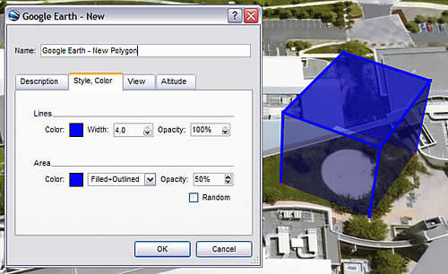

Drawing Paths and Polygons
You can draw free-form paths and polygons in the 3D viewer and save them in your My
Places folder just as you would a placemark. Paths and polygons share all the
features of placemark data, including name, description, style view, and location. Once
you create a path, you can select and play a tour of
it. For more information on modifying paths and polygons once you create them, see
Editing Places and Folders.
Follow the steps below to draw a path or polygon in the 3D viewer.
- Position the 3D viewer to best contain the region you want to mark. The
more detailed your view, the more closely your drawing can follow the land feature. From
the Add menu, select Path (Ctrl + Shift + T) or Polygon (Ctrl + Shift +
G). The New Path or New Polygon dialog box appears and the cursor changes to a square
drawing tool. Enter the properties for your drawing just as you would for any other type
of places data. See Editing Places and Folders for
details.
Hint: Change the style color (Style, Color tab) for the line or
polygon from the default white to better visualize the shape you are about to try.
Click in the viewer to start your drawing and use the following methods to achieve your
desired shape:
-
Free-Form shape - Click once, hold, and drag. The cursor
changes to an up-arrow to indicate that you are using free-form mode. As you drag
the cursor around the 3D viewer, the outline of the shape follows the path of your
cursor. If you are drawing a path, a line appears as a result, and if you are
drawing a polygon, a shape evolves from the path of your cursor, always connecting
the beginning and ending points.
-
Regular shape - Click and release. Move the mouse to a new point
and click to add additional points. In this mode, the cursor remains a square
drawing tool, and the path or polygon that you draw is exactly the same as the path
and polygon creation described in Measuring Distances
and Areas.
You can use a combination of these drawing modes to combine curved edges with straight
edges. To transition from a free-form mode to a regular mode, just release the mouse
button, position the pointer to a new place, and click. A straight edge is drawn
between the last point and the most recent one. Reverse the process to enter free-form
drawing mode again.

Hint: To navigate in the 3D viewer while creating a new path or
polygon, use the keyboard controls or the navigation
panel.
- If you are creating a polygon, you can make the shape a 3D object. To do
this:
- Click the Altitude tab.
- Slide the slider from Ground toward Space. This
elevates the polygon. Elevate the shape to the appropriate height.
- Check Extend sides to ground. The polygon is now a 3D object.
Learn more about placing other 3D
objects.
- Click OK to save your new path or polygon.